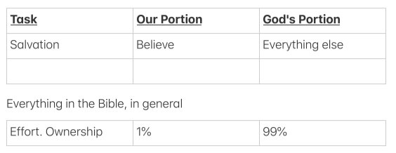

I recently watched a short clip on Matthew 11:30 — “My yoke is easy, and My burden is light” (clip here) — and it sent me back to one of our discussions from earlier this year about what God requires of us versus what He does for us. With salvation, I think it's all Him. I remember as a baby Christian not knowing what “grace” meant even though it seemed to be everywhere in the text. I had a Strong's Concordance, so I looked up and read every single verse on grace in the whole Bible, and landed on this definition: God doing for us what we can't do for ourselves. Still remember it, roughly forty-nine years later. I might not have that exactly right — Jesus does tell us to come, believe, follow — but the core of it held up.
What struck me watching that clip is how much of my own life has actually run on partnership with God, which still astounds me. He could do everything Himself — it would honestly be easier for Him that way — and yet He insists we contribute something, even if it's very little (Exodus 14:13–14 might be the one real exception). So I started building a small table: what's required of us, and what God does in return, running through the Bible's major figures. Adam and Eve through David, so far — there's plenty of room to keep adding.

| Person | My yoke is easy | God's portion |
|---|---|---|
| Adam and Eve | Tend the Garden. Don't eat from one tree. Don't hide or run away. | Provide for their every need. Bless all they do. Be with them. Have fellowship with them. |
| Noah | Obey. Build. Enter. Wait. | Give the dimensions. Close the ark door. Send the flood. |
| Abraham | Go to an unknown place, far away. | Lead and direct him. Provide for him along the way. Establish the covenant. |
| Moses | Go back to Egypt. Confront Pharaoh. Speak (through Aaron, at first). Stretch out his staff. | Hear Israel's cry. Send the plagues. Harden and overrule Pharaoh's heart. Divide the Red Sea and defeat Egypt's army. |
| Israel | Hear and obey the covenant. Live out their identity in God — demonstrating His justice, in their worship and holiness. | Assure blessing (and warn of curse if disobeyed). Remain present with them. |
| Joshua / Israel | Cross the Jordan. March around Jericho, even though it sounds ridiculous. Fight the battles. Take possession of the land. | Lead them into the land. Go before them. Give them the land. Give them the victory to secure it. |
| David | Be king of Israel. Shepherd the people, administer justice, walk faithfully with God. Rule righteously, in obedience — his line's obedience or failure would affect how God remained with them. | Choose David. Promise him an enduring kingdom and preserve the Messianic line through him. |
Isaac, Jacob, and a lot of other names could go on this list — it's really an open project. But the pattern already feels consistent: God asks for very little, and does almost everything.
Comments